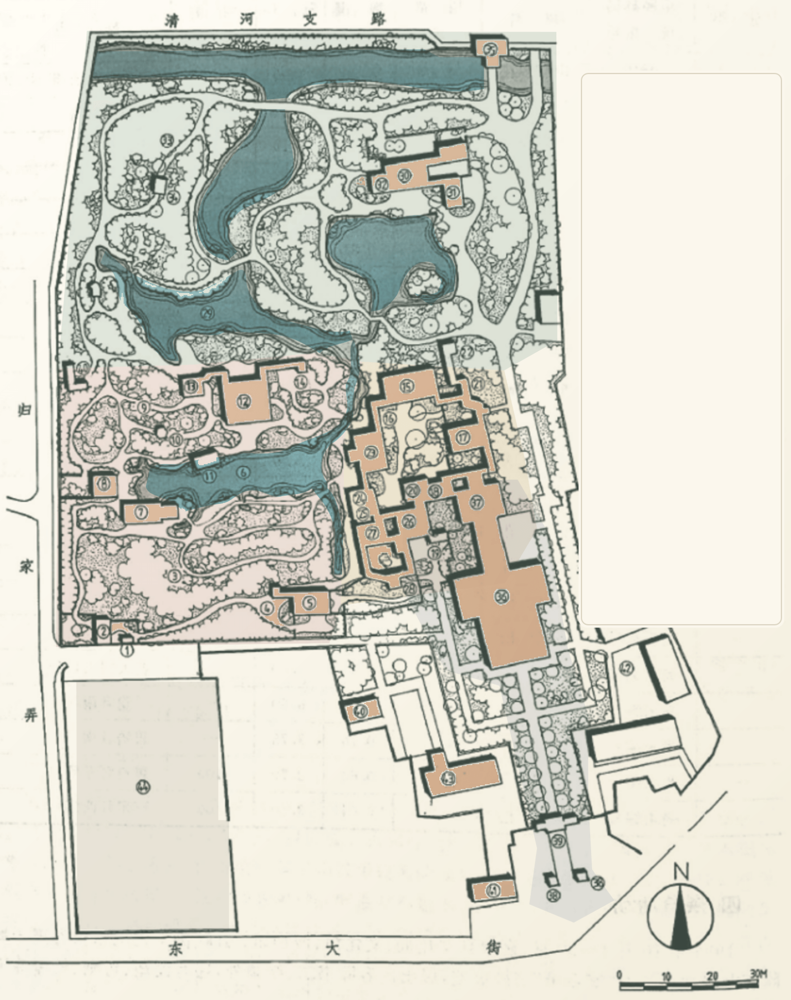

1987 年秋霞圃平面图
点击点位查看 / 编辑；切换绘制模式后点击地图可新增记录。

1987 秋霞圃 · 历史图版
拖动平移 · 滚轮缩放 · 点击编号查看点位详情
● 桃花潭 ● 凝霞阁 ● 清镜塘 ● 城隍庙
底图 819 × 1034 px · 44 个历史编号建议：现场调查后及时导出 JSON 备份
点击点位查看 / 编辑；切换绘制模式后点击地图可新增记录。

所有记录保存在本机浏览器。JSON 备份可迁移到另一台电脑；照片会以 Base64 一并打包。